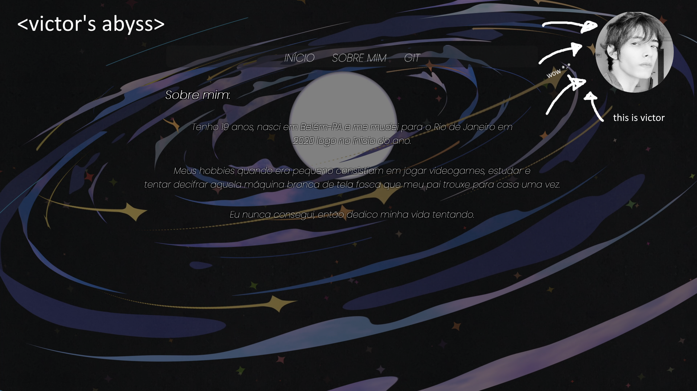

Oi, eu sou o Victor.
aspirante a desenvolvedor full-stack
aspirante a desenvolvedor full-stack
HTML e CSS foram as primeiras "linguas de programação" que entrei em contato. Estudei durante meses antes mesmo de começar minha graduação de Ciência da Computação e tive uma grandissima evolução durante os últimos meses.
Assim que descobri os recursos do javascript para web-development resolvi começar a estudar a linguagem. Atualmente estou no inicio do meu aprendizado, mas já aplico em alguns de seus recursos em projetos pessoais e de faculdade, inclusive neste próprio site.
Em 2020 participei de um projeto com amigos para a criação de uma
light-novel através da engine Renpy, uma engine que utiliza Python e Cython especializada para a criação de light-novels. Diversos jogos já utilizaram a engine, sendo o "Doki Doki Literature Club" o mais popular. Aprendi muito e escrevi dezenas e dezenas de linhas em Python.
Descobri que aprendo rápido e adoro resolver problemas confirmando que provavelmente escolhi a carreira correta.
Meus TrabalhosEstudante Brasileiro de Ciência da Computação
Tenho 19 anos, nasci em Belém-PA e me mudei para o Rio de Janeiro em
2020 logo no ínicio do ano. Meus hobbies quando era pequeno consistiam em jogar videogames, estudar e
tentar decifrar aquela máquina branca de tela fosca que meu pai trouxe para casa uma vez.
Eu nunca consegui, então dedico minha vida tentando.
(Até agora)
Esse foi meu primeiro site pessoal. O primeiro projeto depois de muitos testes e também o primeiro projeto que criei durante o inicio de meu curso. Ele possuia duas páginas, uma "home" e outra "sobre mim" que está logo aqui embaixo, além de um hyperlink para o meu github. O fundo eram videos perfeitamente em loop. Foi aqui também que tive a ideia da logo e do nome de meu site pessoal.
Essa é a página "sobre mim" do meu primeiro site pessoal. Eu resolvi mudar o video de fundo para dar um contraste entre as duas páginas. Hoje também percebo que talvez eu deveria ter mantido minhas informações de contato já que era uma página "SOBRE MIM". Vivendo e aprendendo.
Esse foi um site para um trabalho da faculdade. Nossa missão era criar um conceito de site para uma empresa. Eu escolhi um restaurante. Fiz a logo e escolhi um conceito "gourmet", além de inventar os donos e algumas outras coisas como localização e a história do restaurante.
Esse é um print de um jogo em light-novel que desenvolvi em Python. Meus amigos e eu queriamos criar um jogo, mas apenas eu tinha experiência em programação(mesmo que mínima), então resolvemos fazer uma light-novel. Uma light-novel demandaria uma equipe bem menor de programadores para ser desenvolvido, então parecia a melhor ideia a se seguir. Eles ficariam responsaveis pela narrativa e eu pela programação. Foi o projeto que fez eu me apaixonar definitivamente por programação. A sensação de estar continuamente aprendendo e vendo seus esforços e ideias darem certo em um trabalho em equipe constante foi o ponto em que eu percebi que essa era a carreira que queria seguir.